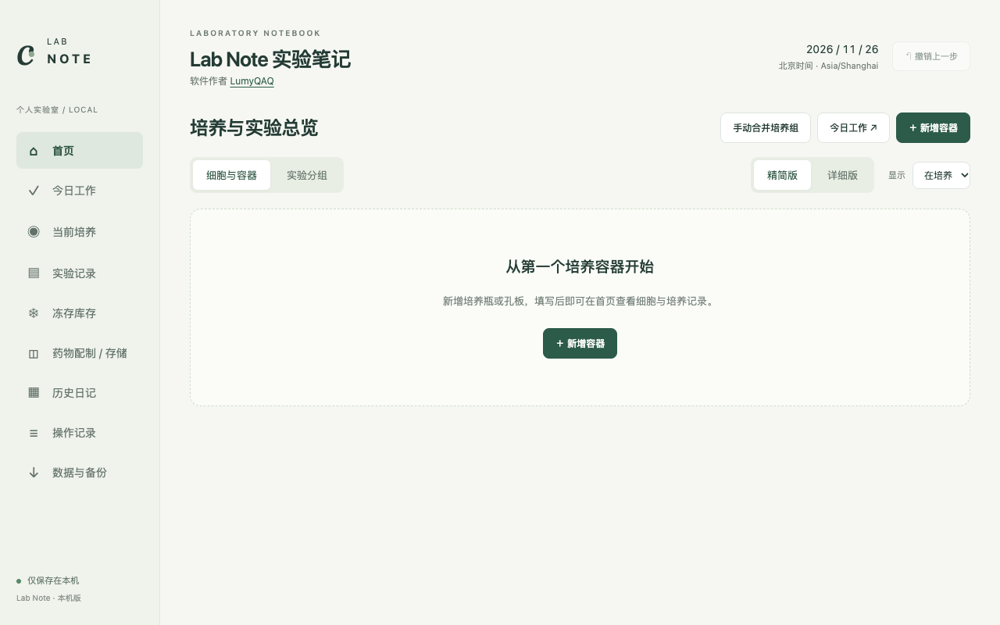

培养与流转
记录 Day 0、完全培养基配方、补液、半换液与计数；跨规格分板时按原相对位置映射，并保留完整传代凭据。
从一个培养孔，查到它的来源、每天的观察、冻存库位与后续实验。
孔位预览 · 0 / 24 已填写
点选任意培养孔，可预览空白孔板的坐标定位与记录入口。
培养工作台
从首页进入一块培养板或冻存盒，给选中的多个单元统一登记操作；单孔或单管条件分化时，也可拆分独立记录并保留完整谱系。

记录 Day 0、完全培养基配方、补液、半换液与计数；跨规格分板时按原相对位置映射，并保留完整传代凭据。
自定义液氮罐、吊架与冻存盒尺寸，支持批量亚克隆自动编号、拖选空位、低库存提醒、分布图打印及 30 天污染预警。
从来源孔直达实验记录，可记录流式、Western Blot、PCR / qPCR、ELISA 和发光检测，并可逐行预览从 Excel 粘贴的结果。
事务型 SQLite 仅存于本机，支持每日快照、无损历史压缩、导出带校验和的完整 ZIP 备份。手机和平板可通过局域网或 Tailscale 配对访问。
RELEASE HISTORY
最近发布 v1.6.0。可在「数据与备份」检查更新，macOS 独立包也可用自带的升级脚本验证签名并更新。升级前请先在旧版下载完整备份并停止旧服务。
需要 Python 3.9 或更新版本。程序沿用本机原有数据目录，升级不会覆盖既有实验记录。
启动实验日记.command，浏览器会自动打开工作台；后续版本可双击 更新培养工作台.command 自动校验签名并升级。也可在解压目录的终端执行：
python3 app/launch.py启动器默认优先使用 8875 端口，被占用时会自动选择空闲端口。
查看 macOS 版本说明 ↗适用于 Windows 10 / 11 的 Intel、AMD 64 位电脑，压缩包内已自带 Python 运行环境。
Lab-Note 文件夹，双击 Start-Lab-Note.cmd，默认浏览器会自动打开工作台。默认优先使用 8875 端口，占用时自动选择空闲端口。在解压目录的 PowerShell 中可执行：
.\Start-Lab-Note.cmd -h
.\Start-Lab-Note.cmd --status
.\Start-Lab-Note.cmd --port 8890切换端口前请先执行 .\Stop-Lab-Note.cmd。数据与日志默认保存在 %LOCALAPPDATA%\Lab Note；双击 Check-Lab-Note.cmd 可用临时库自检。
先在电脑工作台的「设备」页面选择局域网或 Tailscale 地址并开启共享。按提示在自己的移动设备上信任该工作台的公开 CA 证书，再打开 HTTPS 地址并输入配对码。可添加到主屏幕使用；电脑需保持运行。